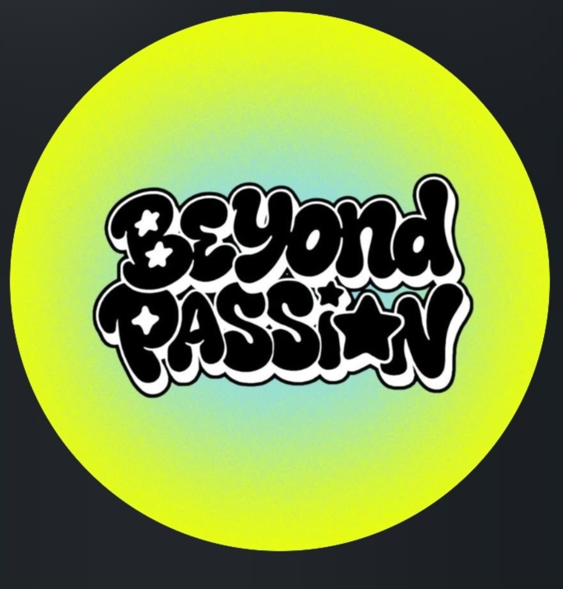

ถ่ายทอดชีวิตจริงของแต่ละสายการเรียน ทั้งวิทย์-คณิต, ศิลป์-คำนวณ, ศิลป์-ภาษา และสายอื่น ๆ ว่าเรียนหนักแค่ไหน เจอวิชาอะไรบ้าง และบรรยากาศเป็นอย่างไร

เลื่อนลงเพื่อดูนโยบายทั้ง 7 ข้อ
เน้นพัฒนาสนับสนุนความสามารถวิชาการ ดนตรี กีฬา
มีการจัดเตรียมกระดาษห่อผ้าอนามัย สำหรับนักเรียนหญิง
ชี้เป้าประชาสัมพันธ์งาน open house และค่ายต่าง ๆ จากมหาลัย ให้เข้าถึงง่าย
QR Code รับรายงานแจ้งปัญหาต่าง ๆ ตามจุดโรงเรียน
นำตระแกรงใส่ขวดน้ำ มาวางตามจุดต่าง ๆ เพื่อนำไปคัดแยกรีไซเคิลต่อไป
การสร้าง Podcast & Space ในรูปแบบการนั่งคุยกันอย่างเป็นกันเองระหว่างรุ่นพี่และรุ่นน้อง เพื่อเจาะลึกและทำความเข้าใจในสายการเรียนต่าง ๆ ไม่มีกั๊ก
ถ่ายทอดชีวิตจริงของแต่ละสายการเรียน ทั้งวิทย์-คณิต, ศิลป์-คำนวณ, ศิลป์-ภาษา และสายอื่น ๆ ว่าเรียนหนักแค่ไหน เจอวิชาอะไรบ้าง และบรรยากาศเป็นอย่างไร
เปิดโอกาสให้น้อง ๆ ส่งคำถามที่สงสัยหรือกังวลใจมาให้รุ่นพี่ช่วยตอบและแนะนำ เหมือนมีพี่รหัสหรือเพื่อนคู่คิดมาช่วยแนะแนวโดยตรง
แนะนำแนวทางการเตรียมตัวสอบ การค้นหาตัวเอง รวมถึงโอกาสในการต่อยอดเข้ามหาวิทยาลัยและอาชีพในอนาคต
ยกระดับเสียงตามสายโรงเรียน เปลี่ยนกระจายข่าวแบบเดิมให้กลายเป็นรายการสด “Morning Talk” สุดสดใสช่วงเช้าก่อนเข้าเรียน อัดแน่นด้วยสาระและความบันเทิงที่เข้าถึงนักเรียนทุกคน